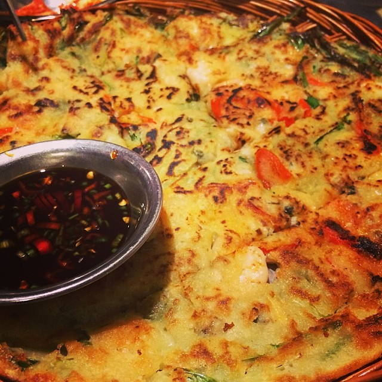

Haemul Pajeon (Seafood Pancake) is a dish that is on the menu at almost every traditional Korean restaurant inside and outside of Korea. It is often enjoyed as a greasy side dish that complements alcohol, but a lot of people enjoy it as an appetizer dish too.
Although there are no historical records noting its origins, it is believed that it was a dish eaten to celebrate winning against the Japanese in one of the many wars fought against Japan.
This seafood pancake is different from the American version of pancakes. The batter is lighter and there are more savory flavors due to the fact that there is less flour & butter and more ingredients like seafood and vegetables.
The most basic version of Haemul Pajeon consists of flour, water, green onion (scallion), chili peppers, and shrimp. Since the pancakes are not seasoned, they are served with and dipped onto a side sauce (made by mixing soy sauce, vinegar, sesame seeds, chili pepper powder, and sesame oil).
The pancake, with its red chili peppers, and its accompanied side sauce makes this dish a characteristic Korean dish that has salty and spicy flavors.
Ingredients for Seafood Pancake
- All-Purpose Flour or Korean Pancake Mix
- Water
- Green Onion (Scallion)
- Chili Pepper
- Seafood
- Vegetable Oil

Photo: Seafood pancake at Daebak #korean #food by Lim Ashley at Flickr CC BY 2.0
Ingredients for Side Sauce
- Soy Sauce
- Vinegar
- Sesame Seeds
- Chili Pepper Powder
- Sesame Oil
Basic Recipe for Pancake
- Dice chili peppers and julienne green onions
- In medium bowl, add in flour and add in enough water to make batter somewhat watery
- Add in green onions, chili peppers, and seafood into batter mix
- Turn on stove, heat up pan, and add oil
- Scoop up batter with big spoon and spread onto pan
- Fry pancake until golden brown on both sides
- Serve immediately
- Tips and Notes
- - Amount of green onion and chili peppers is up to your discretion. Most people like pancakes that have more vegetables and seafood rather than the flour batter
- - Some people like to add chives to the dish
- - Korean Pancake Mixes are usually sold at Asian or Korean grocery stores
- - You can eye the ratio of flour to water. Too watery batters will not hold up and too much flour will make the pancakes tough to eat
- - Add enough oil so that pancake is frying but not level of deep-frying (probably amount to cover thin layer of pan)
- - Any type of seafood can be used. Most common ones are: shrimp, oyster, squid, seafood mixes
- - Unfortunately, it is hard to find alternatives for gluten allergy